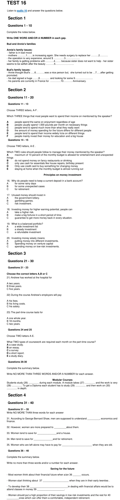

IELTS Listening: Test 16
Audio
This is the whole test, in one recording. In the exam you hear it once, so try a first listen without pausing.
Question book
Section 1
Questions 1–10
Complete the notes below.
Write ONE WORD AND/OR A NUMBER in each gap.
Bud and Annie's families
Annie's family issues:
father is in bad mood
mothers 1 is increasing again. She needs surgery to replace her 2
the operation is very expensive, around $ 3
her family is getting problems with 4 because sister does not want to help - her sister seems to be selfish after the beauty 5
Bud's family issues:
Annie thought Bud's 6 was a nice person but, she turned out to be … 7 after getting promoted.
his dad signed a huge 8 and looking for some 9
his parents are currently in France for 10 Anniversary.
Section 2
Questions 11–13
Choose THREE letters, A-F .
Which THREE things that most people want to spend their income on mentioned by the speaker?
- A people spend the same on enjoyment regardless of age
- B people usually spend 1,500 pounds per month on necessary things
- C people tend to spend much more than what they really want
- D the amount of money spending for the future differs for different people
- E people tend to spend their income widely trzia on different things
- F people mainly invest their money for education and a big house
Questions 14–15
Choose TWO letters, A-E .
Which TWO rules should people follow to manage their money mentioned by the speaker?
- A maximum of 10 percent of the monthly budget is allowed for entertainment and unexpected things
- B do not spend money on fancy restaurants or drinking
- C only use cash for essentials like house repairs, birthday present
- D Only use credit card to buy something for changing money
- E staying at home when the monthly budget is almost running out
Principles on money investment
16 Why do people need to keep a current deposit in a bank account?
- A for some rainy days
- B for some unexpected cases
- C for retirement
17 Unused money should invest in
- A the government lottery.
- B gambling games.
- C risk investment.
18 Investing money for higher earning potential, people can
- A take a higher risk.
- B make a big fortune in a short period of time.
- C guarantee to get more money back in every situation.
19 What is a balanced portfolio?
- A a wide investment list
- B a steady investment
- C a refundable investment
20 Investing money wisely means
- A putting money into different investments.
- B Spending money on venture capital
- C spending money on low-risk investments.
Section 3
Questions 21–23
Choose the correct letters A,B or C
21 Andrew has worked at the hospital for
- A two years.
- B three years.
- C five years.
22 During the course Andrew's employers will pay
- A his fees.
- B his living costs.
- C his salary.
23 The part-time course lasts for
- A one whole year.
- B 18 months.
- C two years.
Questions 24–25
Choose TWO letters A-E.
What TWO types of coursework are required each month on the part-time course?
- A a case study.
- B an essay.
- C a survey.
- D a short report.
- E a study diary.
Questions 26–30
Complete the summary below.
Write NO MORE THAN THREE WORDS AND/OR A NUMBER for each answer.
Modular Courses
Students study 26 during each module. A module takes 27 and the work is very 28 To get a Diploma each student has to study 29 and then work on 30 in depth.
Section 4
Questions 31–35
Write NO MORE THAN three words for each answer
31 According to George Bernard Shaw, men are supposed to understand _________, economics and finance.
32 However, women are more prepared to _________about them.
33 Women tend to save for ______________and a house.
34 Men tend to save for ______________and for retirement.
35 Women who are left alone may have to pay for ______________________ when they are old.
Questions 36–40
Complete the summary below.
Write no more than three words and/or a number for each answer.
Saving for the future
Most women think about their financial future when a/an 36 occurs.
Women start thinking about 37 when they are in their early twenties .
To develop their 38 in dealing with financial affairs would be to attend classes in money 39
Women should put a high proportion of their savings in low risk investments and the rest for 40 ones which can offer them a comfortable, independent retirement.
Show the original book pages (picture)

Tap or click the pages to open them full size in a new tab.
Answer sheet
Marking ignores capital letters and accepts plurals and the usual alternative answers. If your answer is right but not accepted, press My answer is also right under it.
Tapescript
Check your answers first, then the tapescript opens here.